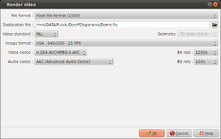

Introduction
This dialog has two different
appearances depending on whether you clicked the button for
device type or the Advanced button.
If you clicked the device type button, the dialog has two
selection zones:
- The first zone allows you to select a device category
- The second zone allows you to select a device model
If you clicked on the Advanced button, the following dialog will
appear:

Description of the dialog box in advanced mode
File
format
|
Select the type of file
to be used to render the video from the displayed list. |
Video
Standard
|
Select the video standard
to be used: PAL or NTSC. |
Image
format
|
Select the image format
to be used to render the video from the displayed list.
|
Video
codec
|
Select the video codec to
be used to render the video from the displayed list. |
Bit
rate
|
Select the video
compression ratio from the displayed list |
Audio
codec
|
Select the audio codec to
be used to render the video from the displayed list. |
| Bit
rate |
Select the video
compression ratio from the displayed list |
Render the movie
Once the you have selected the
device or set the advanced parameters, one click on the OK
button starts the process of rendering the video.
At any time during this process, one click on the "Cancel"
button stops the process.
Remark :
Depending on the device model or the advanced parameters which
you selected, the generation can take quite a long time.
Generally, for a Full-HD 1080p video :
- On a PC with 4 fast cores (Core i7 for example) : The
process will take approximately 2 minutes for each minute of
video to be rendered
- On a PC with 2 cores (Core 2 duo for example) : The
process will take approximately 5 minutes for each minute of
video to be rendered
This amounts to 2 to 5 hours for a one-hour video.
This duration will be much shorter for a video in VGA
resolution. That is why we recommend you to carry out all tests
and focusing trials at low resolution, and to render your videos
in Full-HD only for the last step.
See also
ffDiaporama 1.0 - August
2011
 Rendering the
video
Rendering the
video